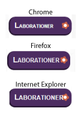

Logg 6
Trodde att jag var färdig med sprites men nu upptäckte jag att mina länktexter ligge och skräpar 9999px ifrån sidan.... eftersom jag har bett dom ligga där. Men i demon så gör Johan så och jag hittar själv heller ingen annan lösning. Man tänker ju sig att man skulle kunna köra någon typ av display: none;. Nu till slut så gjorde en enkel lösning i alla fall: jag plockade bort länktexten. Dock är väl inte det ultimat med tanke på tillgänglighet och sökmotoroptimering? Hur löser man detta bäst?
Har nu lagt upp sidan i sex php dokument i P:// också. Samt lånat en bok PHP and MySQL from novice to ninja. Får hoppas den hjälper :)
Logg 5
Uppgift 3.3 är färdig. Hade dock varit kul att få redovisa något för att få lite mer kommentarer på koden. Känns som sagt som att man många gånger hittar på egna nödlösningar när det kanske finns mer eleganta sätt att gå till väga. Vore kul om ni tog er tid till att kommentera detta någon gång, bäst hade varit att få sitt aoch gå igenom uppgifter tillsammans med lärare.
Logg 4
Nu tror jag att labb 2 är klar. Har varit lärorikt, men ibland känns det som att det blir lite knöggliga lösningar i css:en. Känns som att just valet mellan att sätta positioner och storlekar i procent eller pixlar blir aldrig riktigt bra. När jag testar sidan i olika webläsare upplevar jag att det när som helst skulle kunna se oliak och ocxh plötsligt får man tänja på designen lite igen för att det inte ska se för jävligt ut i något webbläasre.
Ett problem som jag precis stötte på var till exempel att det vart olika mycket plats kvar för active-ikonen i navigationsmenyn. Och även fast jag till slut gick med på att ge li-elementen lite mer padding så blev det aldrig riktigt bra i IE. På bilden kan man se hur det i IE på knappen laborationer blir för tätt mellan text och blomman, den lilla bilden som ska visa var på sidan man befinner sig.
En annan sak jag stör mig på är att loggan nu laddar lite senare än resten av sidan sedan jag la den bilden i css-dokumentet. Men det är ju bara en liten detalj. Dock störande.Nu blir nästa projekt att dela upp sidan i php-dokument; ett litet personligt projekt för att se om jag kan lyckas effektivisera kodningen och slippa sitta och ändra i varje html-sida när det gäller layouten på sidan. Det lär väl bli en del krångel med det nu i helgen. Har redan försökt göra det via git och c9, men sedan upptäckte vi att det inte fanns stöd för det jag ville göra. Så nu har jag laddat ner JEdit och MAMP. Ska bli roligt att testa lite i alla fall.
Logg 3
Måste komma ihåg att fråga varför labmenyns font plockar upp info från ul li fastän den är id-taggad.
Logg 2
Dagens mål är att få sidan att se lite snyggare ut med någon bakgrundsbild och att slutligen kanske flytta in en typ av header/logga i css-dokumenten.
Logg 1
Då har äntligen det här med css börjat klarna lite. Har dock insett hur mycket olika sätt det finns för att skapa en webbsida. Jag som trodde det skulle räcka med att kunna lite css och html... Nåväl, slutkodat för denna veckan. Nu är det dags att ta sig an kursen grafiska verktyg igen.